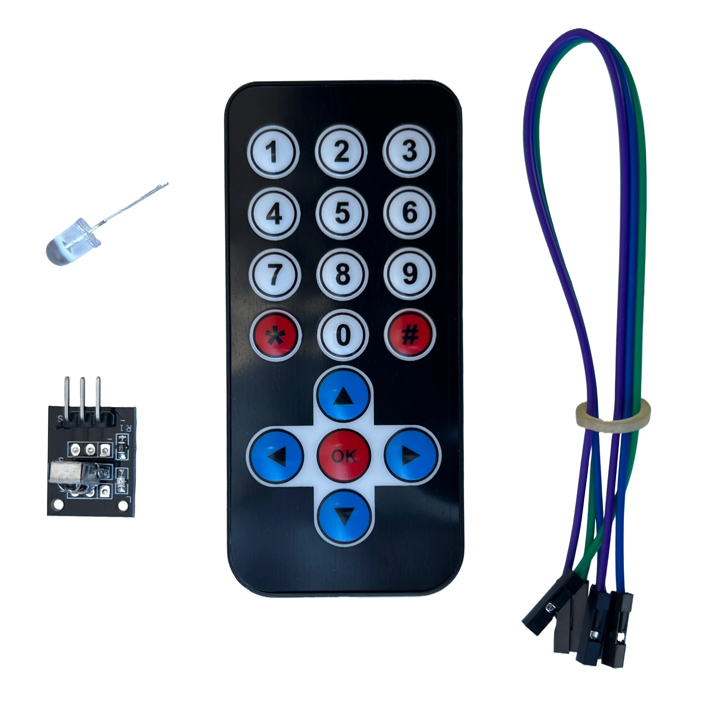

Um detector de infravermelho reage à radiação infravermelha (ou IR, do termo em inglês Infrared radiation). Os dois tipos principais de detectores são térmico e fotônico (fotodetectores).
Os efeitos térmicos da radiação IR incidente podem ser caracterizados por muitos fenômenos dependentes da temperatura.
Bolômetros e microbolômetros são baseados em mudanças na resistência. Termopares e termopilhas usam o efeito termoelétrico.
As células de Golay seguem a expansão térmica. Nos espectrômetros de infravermelho, os detectores piroelétricos são os mais comuns.

O sensor possui 3 pinos, o central positivo (5v), lado esquerdo negativo (GND), lado direito sinal de saida (OUT)
Para esta programação precisa-se de da biblioteca do sensor IRremote que pode ser adiquirido no link abaixo Baixar a biblioteca IR remote